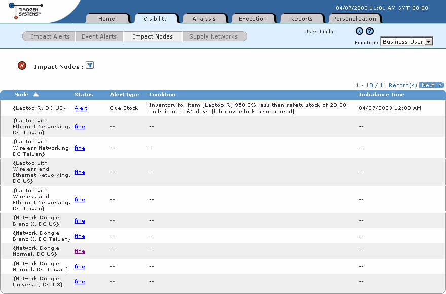

Timogen Web Site
Voice: (650) 903-9888
Fax: (650) 903-9327
info@timogen.coms
Viewing Impact Node Lists
Impact Nodes are shown as lists of records on the Impact Nodes list page. The list shows essential information about each record.
To view an Impact Node list1 In the Function drop-down list, select Business User.2 Click the Visibility tab.3 Click Impact Nodes. The Impact Nodes list page appears.The Impact Nodes list page contains the following information:Click on a Status link to go view detailed information about that Impact Node on its Supply Network page. For more information, see "Supply Networks".
Click on a column header that is a link (underlined) to sort the records by the contents of that column. You can also filter the contents of the list to view a subset of the records.
Note: You can view only the Impact Nodes you've subscribed to. For more infor- mation on subscribing to Impact Nodes, see "Impact Node Subscriptions".
|
|
Timogen Systems Timogen Web Site Voice: (650) 903-9888 Fax: (650) 903-9327 info@timogen.coms |